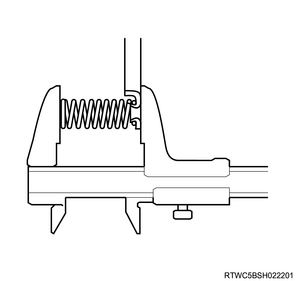
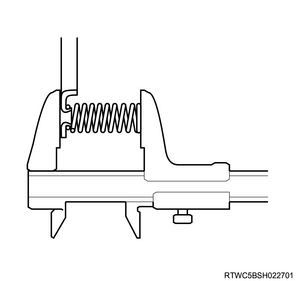
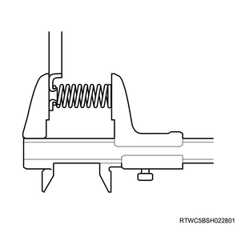
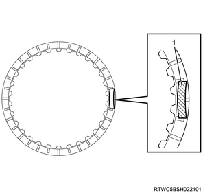
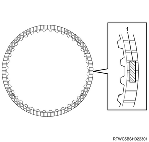
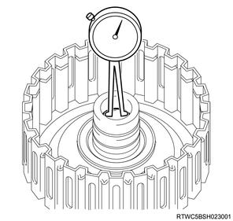
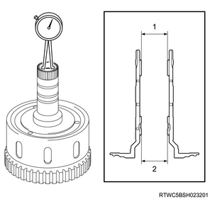
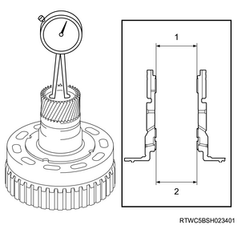

1. Measure the forward clutch return spring sub-assembly using a vernier caliper.
Note
Standard： 26.74 mm { 1.0528 in }

1. Measure the direct clutch return spring sub-assembly using a vernier caliper.
Note
Standard： 19.51 mm { 0.7681 in }

1. Measure the reverse clutch return spring sub-assembly using a vernier caliper.
Note
Standard： 21.04 mm { 0.8283 in }

1. Inspect the clutch disc No.1.
Note

1. Inspect the clutch disc No.2.
Note
1. Inspect the clutch disc No.3.
Note

1. Measure the forward clutch assembly using a dial gauge.
Note
Standard： 20.000 to 20.025 mm { 0.7874 to 0.7884 in }

1. Measure the direct clutch hub sub-assembly using a dial gauge.
Note
Standard： 26.037 to 26.062 mm { 1.025 to 1.026 in } Front
Standard： 26.037 to 26.062 mm { 1.025 to 1.026 in } Rear

1. Measure the reverse clutch hub sub-assembly using a dial gauge.
Note
Standard： 35.812 to 35.837 mm { 1.410 to 1.411 in } Front
Standard： 35.812 to 35.837 mm { 1.410 to 1.411 in } Rear
